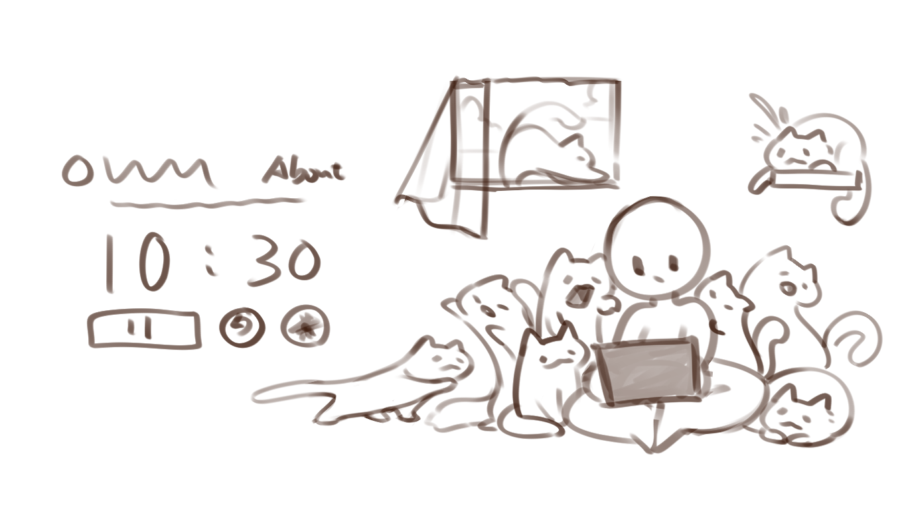
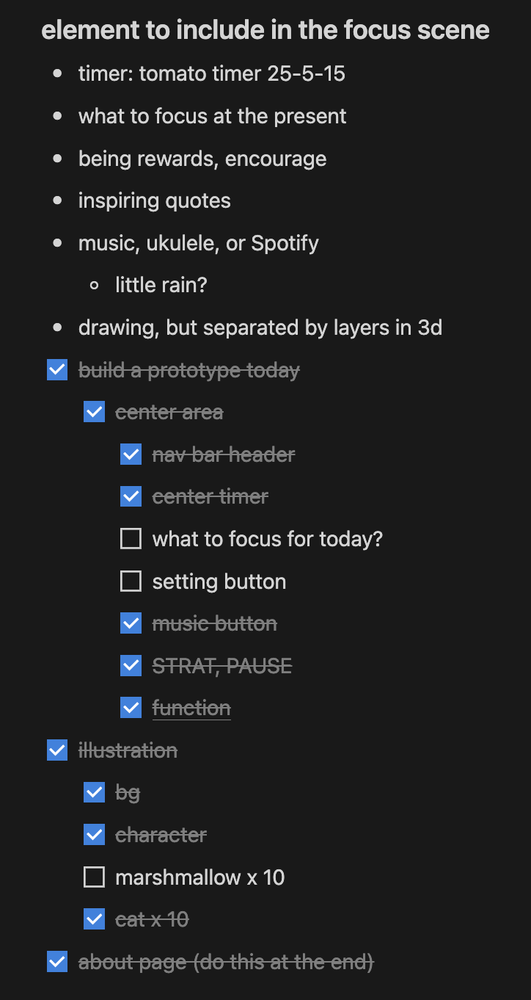
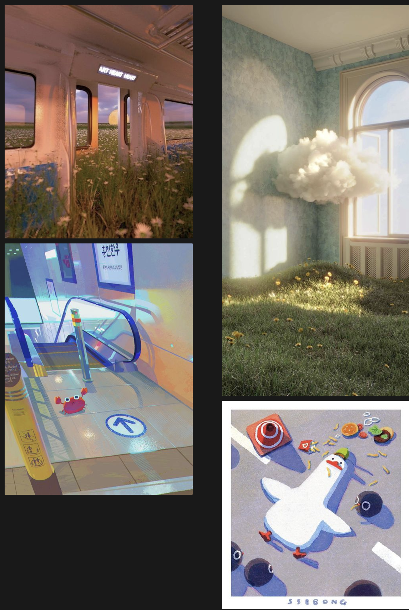

About this project
Art itself is already an architecture of care.
Art itself can be inclusive to everyone regardless their cultures, language, background, or individual experience.

Initial outline in Figma
Art itself can be inclusive to everyone regardless their cultures, language, background, or individual experience. Especially abstraction art who eliminates our common conception towards figurative or symbolistic objects, only our emotion remains to feel the work.
Initial sketch of website idea
This project Cats Care is a interactive and functional website that uses cats and art as the agent of communication. Considering the need from everyone, this website provides a space being alienated from everything, a space just for you. You will be depicted as the figure at the right of the website (bottom if you are opening this via phone or any vertical screen)
The checklist I created in plan
This time again I use website to build a virtual space that is simple to access. I refused to use any existing templates and simplified the website as clean as I could, to maximize the accessibility for anyone. (yes no pop out ads at all)
The simplification to me is a key concept to be actually caring everyone, knowing how stressful and distracting the current social media (even real life) can be by pushing all the messages to you. The unwanted passive message could be an advertisement, a random news without any trusty sources, or just some colors that rush into your view. As a space just for you, I use the black and white, minimum text, and the clean sketch for art style.
Reference or Inspiration of the project
Rather than being an architecture of Care, I see this project as a foundation being constructing.
Process of making
Time spent:
one week(inspiration, researching) + one night... (writing coding and drawing layers, cursors)
Languages / softwares I used:
- HTML: completely build from scratch
- CSS: tailwindcss, bootstrap
- Javascript: animation and interaction
- Clip Studio Paint: drawing
- Github + Netlify + Visual Studio Code: website hoster
- Flaticon for icon, Pixabay for sound effect, copyright free